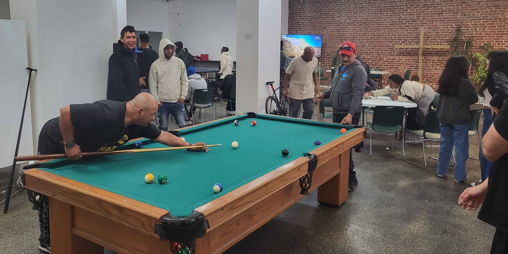
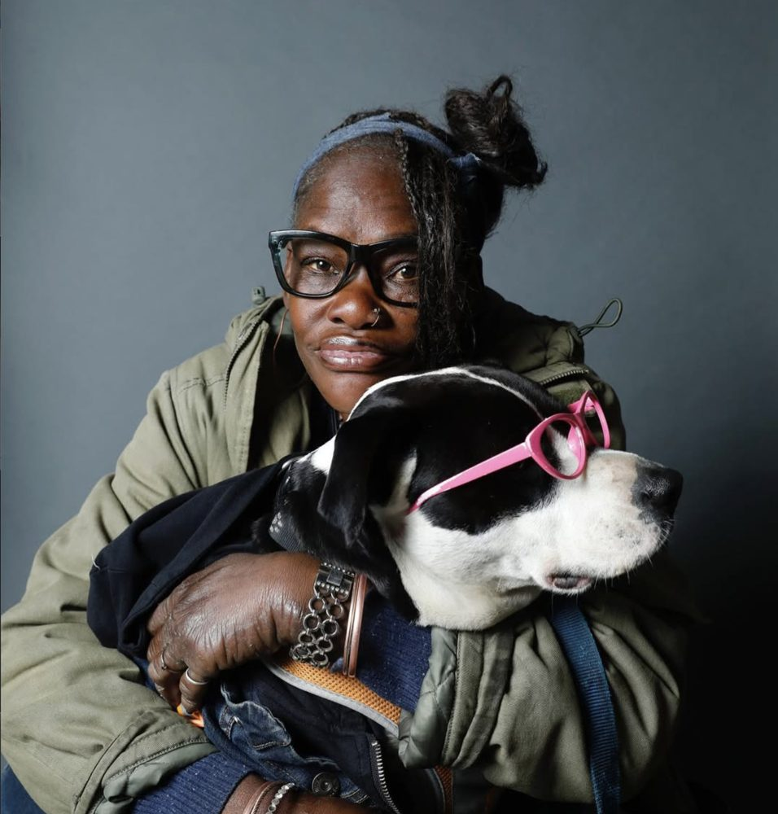
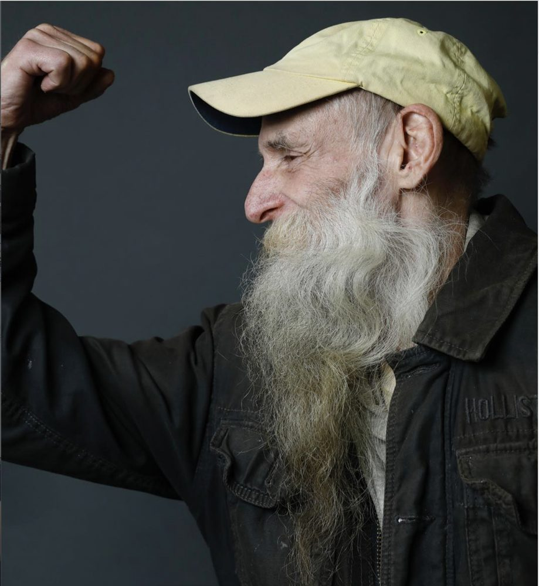
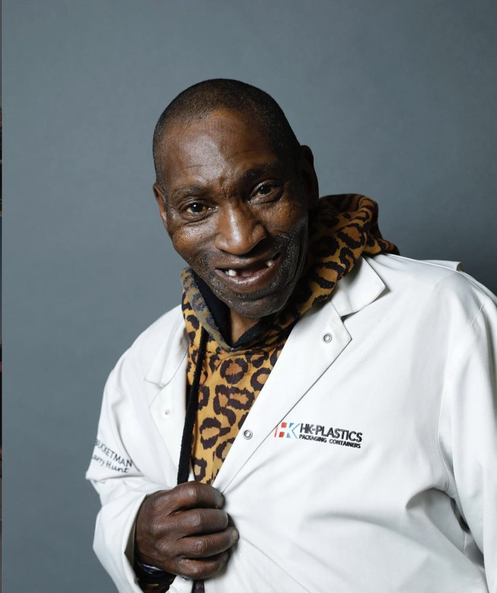
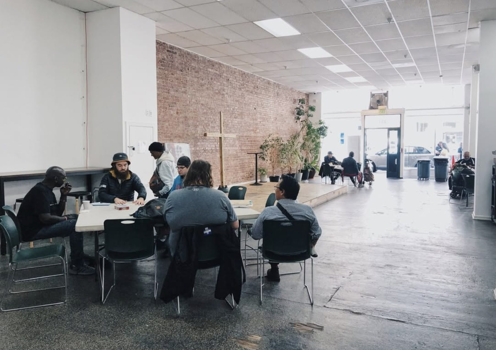
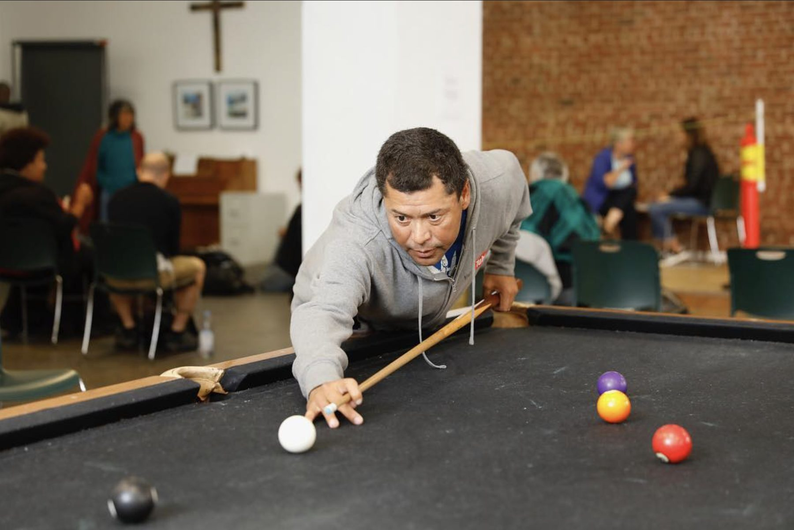
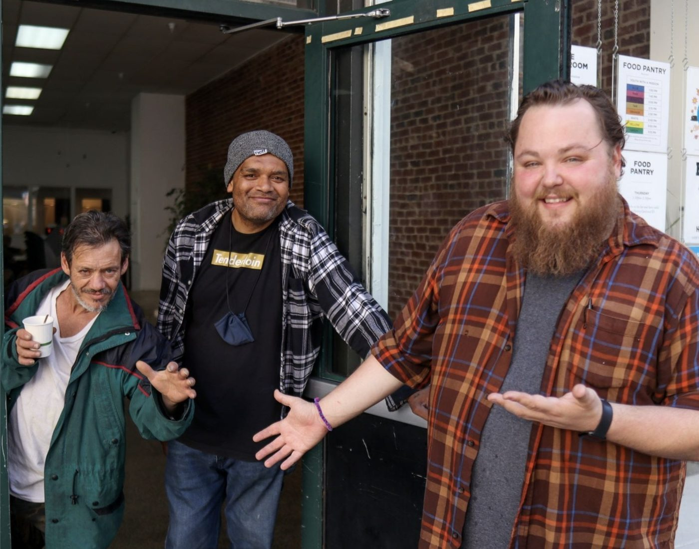

The Ellis Room
Where neighbors become friends. Friendship over coffee, a full pantry, a hot shower, and someone to pray with. We walk alongside our neighbors and build bridges to the community resources and church family that help life flourish. Jesus came so that we may have life, and have it abundantly (John 10:10), and we see that life growing on these blocks every day.
Everyone has value. Everyone has a place. Everyone has something to give, and everyone has something to receive.
Relationship. Dignity. Respect.
Friendship comes first. From there, we help neighbors connect with the resources and the church community around them.

01Relationship
Tap to readEverything here starts with knowing each other’s names. We pull up a chair, pour the coffee, and keep showing up. Help means the most when it comes from a friend.

02Dignity
Tap to readEvery person who walks through our door is made in the image of God. We meet people where they are and honor their stories.

03Mutual respect
Tap to readWe’re not here to fix the Tenderloin. We’re here to be good neighbors in it. We learn from our neighbors as much as they learn from us, because everyone has something to give and something to receive. We believe that’s when change will come to our beloved neighborhood.
Come by. The door is open.
The proclamation of the Gospel and the activity of the Gospel, side by side. Today, and anything happening right now, is highlighted in San Francisco time.
Mon
Tue
Wed
Fri
Sat
Want to serve with us? Find a volunteer shift →




“A gospel that does not deal with the issues of the day is not the gospel at all.”
Volunteer with usThe food pantry, every Thursday.
We partner with the SF-Marin Food Bank to share food with neighbors living in the 94102 zip code. Sign-ups happen on site at 357 Ellis Street on Thursdays at 3:30 pm. Please bring an ID with your current address, or your ID plus a recent piece of mail.
Need food right away? Visit the SF-Marin Food Bank or call 211.


Join what God is already doing here.
Serve a shift, give toward showers and groceries, or bring a team.
Lessons learned on these streets.
“…choose hurry instead of human in these moments.”Restaurants of the TLFrom the YWAM SF blog
“…seeking out God’s beauty amidst the chaos of daily life.”Arts and MuralsFrom the YWAM SF blog
“…see and understand my neighbors at a much deeper level.”Karol SvobodaFrom the YWAM SF blog
“He shows up. Will you?”Seniors of the TenderloinFrom the YWAM SF blog
“…it’s an honor to walk side by side with these visionaries.”The Youth of the TenderloinFrom the YWAM SF blog